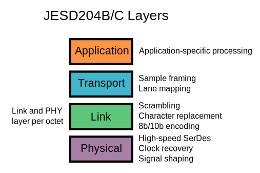

JESD204 Interface Framework
The JESD204, JESD204A, JESD204B and the JESD204C data converter serial interface standard was created through the JEDEC committee to standardize and reduce the number of data inputs/outputs between high-speed data converters and other devices, such as FPGAs (field-programmable gate arrays). Fewer interconnects simplifies layout and allows smaller form factor realization without impacting overall system performance. These attributes are important to address the system size and cost constraints of a range of high-speed ADC applications, including wireless infrastructure (GSM, EDGE, W-CDMA, LTE, CDMA2000, WiMAX, TD-SCDMA) transceiver architectures, software-defined radios, portable instrumentation, medical ultrasound equipment, and Mil/Aero applications such as radar and secure communications. Analog Devices is an original participating member of the JEDEC JESD204 standards committee and we have concurrently developed compliant data converter technology and tools, and a comprehensive product roadmap to fully enable our customers to take advantage of this significant interfacing breakthrough.
Analog Devices supplies a full-stack supporting JESD204B/C which provides a fully integrated system level experience. This solution includes:
Hint
Reference hardware platforms for rapid-prototyping
FPGA HDL support for interfacing JESD204B/C ADCs, DACs, and RF Transceivers
Software support to configure the converter devices and FPGA HDL peripherals
How to Obtain a License
When customers and partners download/use software from GitHub, e-mail or similar ways, they are obligated to comply to the terms and conditions of the Software License Agreement. This core is released under two different licenses. You may choose either:
Commercial licenses may be purchased from Analog Devices, Inc.. or any authorized distributor by ordering IP-JESD204. This will allow you to use the core in a closed system.
GPL 2, this allows you to use the core for any purpose, but you must release anything else that links to the JESD204 core (this would normally be your algorithmic IP). You do not need to sign or purchase anything to use the JESD204 core under the GPL license.
There is only one core – the only difference is the license and support. If you have a question about the license, you can email jesd204-licensing@analog.com.
FPGA HDL Support
The JESD204B/C standard defines multiple layers, each layer being responsible for a particular function. The Analog Devices JESD204B/C HDL solution follows the current standard and defines 4 layers. Physical layer, link layer, transport layer and application layer. For the first three layers, ADI provides standard components that can be linked to provide a full JESD204B/C protocol processing chain.
Depending on the FPGA and converter combinations that are being interfaced, different components can be chosen for the physical and transport layer. The FPGA defines which physical layer component should be used, meanwhile the interfaced converter defines which transport layer component should be used.
The link layer component is selected based on the direction of the JESD204B/C link.
The application layer is user-defined and can be used to implement application-specific signal processing.

Physical Layer
Physical layer peripherals are responsible for interfacing and configuring the high-speed serial transceivers. Currently, we have support for GTXE2, GTHE3, GTHE4, GTYE4 for AMD Xilinx and Arria 10 transceivers for Intel.
AXI ADXCVR: JESD204B Gigabit Transceiver Register Configuration Peripheral
UTIL_ADXCVR: JESD204B Gigabit Transceiver Interface Peripheral for AMD Xilinx FPGAs
Link Layer
Link layer peripherals are responsible for JESD204B/C protocol handling, including scrambling/descrambling, lane alignment, character replacement and alignment monitoring.
JESD204B/C Transmit Peripheral: JESD204B/C Link Layer Transmit Peripheral
JESD204B/C Receive Peripheral: JESD204B/C Link Layer Receive Peripheral
Transport Layer
Transport layer peripherals are responsible for converter specific data framing and de-framing.
ADC JESD204B/C Transport Peripheral: JESD204B/C Transport Layer Receive Peripheral
DAC JESD204B/C Transport Peripheral: JESD204B/C Transport Layer Transmit Peripheral
Interfaces
Interfaces are a well-defined collection of wires that are used to communicate between components. The following interfaces are used to connect components of the HDL JESD204B/C processing stack.
Software Support
Linux
JESD204B/C Transmit Linux Driver: Linux driver for the JESD204B transmit core.
JESD204B/C Receive Linux Driver: Linux driver for the JESD204B receive core.
No-OS
Tutorial
Generic JESD204B block designs. This will help you understand the generic blocks for the next steps.
Checkout the HDL Source, and then build either one of:
HDL Example Projects
AD913x/AD917x/AD9144/AD915x/AD916X Reference Design (dac_fmc_ebz)
AD9081/AD9082/AD9986/AD9988 HDL project on:
(AD9081) Intel Arria 10 SoC
(AD9081) Intel FM87
(AD9081) AMD Xilinx ZC706
(AD9081) AMD Xilinx ZCU102
(AD9081) AMD Xilinx VCU118
(AD9081) AMD Xilinx VCU128
(AD9081) AMD Xilinx VCK190
(AD9082) AMD Xilinx VCK190
(AD9082) AMD Xilinx VCU118
(AD9082) AMD Xilinx ZC706
(AD9082) AMD Xilinx ZCU102
Additional Information
Technical Articles
JESD204B Rapid Prototyping Platforms
JESD204B ADCs
AD6673: 80 MHz Bandwidth, Dual IF Receiver
AD6674: 385 MHz BW IF Diversity Receiver
AD6676: Wideband IF Receiver Subsystem
AD6677: 80 MHz Bandwidth, IF Receiver
AD6684: 135 MHz Quad IF Receiver
AD6688: RF Diversity and 1.2GHz BW Observation Receiver
AD9207: 12-bit, 6 GSPS, JESD204B/C Dual ADC
AD9208: 14-bit, 3 GSPS, JESD204B, Dual ADC
AD9209: 12-bit, 4 GSPS, JESD204B/C, Quad ADC
AD9213: 12-bit, 10.25 GSPS, JESD204B, RF ADC
AD9234: 12-bit, 1 GSPS/500 MSPS JESD204B, Dual ADC
AD9250: 14-bit, 170 MSPS/250 MSPS, JESD204B, Dual ADC
AD9625: 12-bit, 2.6 GSPS/2.5 GSPS/2.0 GSPS, 1.3V/2.5V ADC
AD9656: Quad, 16-bit, 125 MSPS JESD204B 1.8V ADC
AD9680: 14-bit, 1.25 GSPS/1 GSPS/820 MSPS/500MSPS JESD204B, Dual ADC
AD9683: 14-bit, 170 MSPS/250 MSPS, JESD204B, ADC
AD9690: 14-bit, 500 MSPS / 1 GSPS JESD204B, ADC
AD9691: 14-bit, 1.25 GSPS JESD204B, Dual ADC
AD9694: 14-bit, 500 MSPS JESD204B, Quad ADC
AD9695: 14-bit, 1300 MSPS/625 MSPS,JESD204B, Dual ADC
AD9083: 16-Channel, 125 MHz Bandwidth, JESD204B ADC
AD9094: 8-bit, 1 GSPS, JESD204B, Quad ADC
JESD204B DACs
AD9135: Dual, 11-bit, high dynamic, 2.8 GSPS, TxDAC+ DAC
AD9136: Dual, 16-bit, 2.8 GSPS, TxDAC+ DAC
AD9144: Quad, 16-bit, 2.8 GSPS, TxDAC+ DAC
AD9152: Dual, 16-bit, 2.25 GSPS, TxDAC+ DAC
AD9154: Quad, 16-bit, 2.4 GSPS, TxDAC+ DAC
AD9161: 11-bit, 12 GSPS, RF DAC
AD9162: 16-bit, 12 GSPS, RF DAC
AD9163: 16-bit, 12 GSPS, RF DAC and Digital Upconverter
AD9164: 16-bit, 12 GSPS, RF DAC and Direct Digital Synthesizer
AD9172: Dual, 16-bit, 12.6 GSPS RF DAC with Channelizers
AD9173: Dual, 16-bit, 12.6 GSPS RF DAC with Channelizers
AD9174: Dual, 16-bit, 12.6 GSPS RF DAC and Direct Digital Synthesizer
AD9175: Dual, 11-bit/16-bit, 12.6 GSPS RF DAC with Wideband Channelizers
AD9176: Dual, 16-bit, 12.6 GSPS RF DAC with Wideband Channelizers
AD9177: Quad, 16-bit, 12 GSPS RF DAC with Wideband Channelizers
JESD204B RF Transceivers
AD9371: SDR Integrated, Dual RF Transceiver with Observation Path
AD9375: SDR Integrated, Dual RF Transceiver with Observation Path and DPD
ADRV9008-1: SDR Integrated, Dual RF Receiver
ADRV9008-2: SDR Integrated, Dual RF Transmitter with Observation Path
ADRV9009: SDR Integrated, Dual RF Transceiver with Observation Path
JESD204B/C Mixed-Signal Front Ends
JESD204B Clocking Solutions
AD9528: JESD204B Clock Generator with 14 LVDS/HSTL Outputs
ADF4371: Microwave Wideband Synthesizer with Integrated VCO
HMC7043: High Performance, 3.2 GHz, 14-Output Fanout Buffer
HMC7044: High Performance, 3.2 GHz, 14-Output Jitter Attenuator with JESD204B
LTC6952: Ultralow Jitter, 4.5GHz PLL, JESD204B/C
Software Support
No-OS JESD204 project at jesd204
Linux JESD204 project at drivers/jesd204
Linux JESD204 IIO project at drivers/iio/jesd204